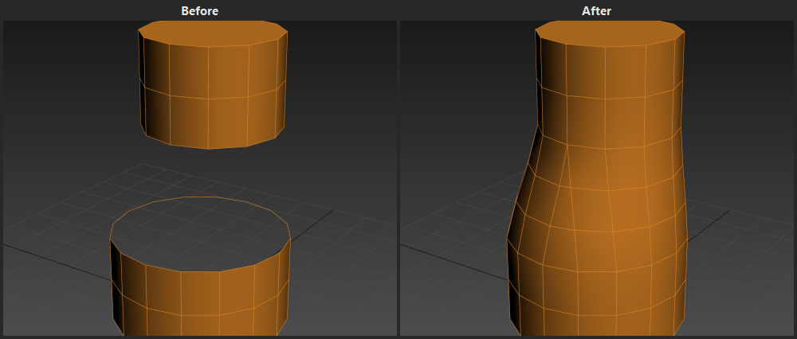

Bridge
Joins two loops with a strip of new faces.
What it does
Bridge connects two selected loops (for example the two sides of a gap, or two holes) with new faces. You choose how many segments the strip has, how it curves and how it is twisted. To join more than two loops, use Loft.

How to use it
- Open an Editable Poly (or an Edit Poly modifier) in the Modify panel and go to a sub-object level. Select two loops, as edges or border edges.
- Right-click in the viewport and choose LoopTools9000, then the tool. The submenu is the first item in the lower-left part of the menu, and only shows at sub-object level.
- The tool runs at once with the settings you used last, and a settings box opens in the viewport. Change a setting and the result updates live.
- Press OK to keep it, Cancel to go back to the original shape, or Apply to keep it and run the tool again on top of the result.
Options
| Option | What it does |
|---|---|
| Segments | How many rows of faces the strip has. 0 lets the tool decide. |
| Min width % | The smallest width a segment may have, as a share of the loop's size. |
| Interpolation | Cubic follows a smooth curve between the loops. Linear goes straight. |
| Strength | How strongly the strip bends along the curve. Negative values bend it the other way. |
| Remove faces | Removes the selected faces between the loops before bridging (on by default). |
| Twist | Turns the connection round the loop by this many vertices. |
| Reverse | Joins the loops in the opposite direction. |
Good to know
- Twist and Reverse are for when the two loops come out joined the wrong way round.
- Some of the settings are greyed out when the strip has a single segment.
- Keeping the result is one undo step.
- Your settings are remembered for next time.
- It works on Editable Poly and on the Edit Poly modifier.